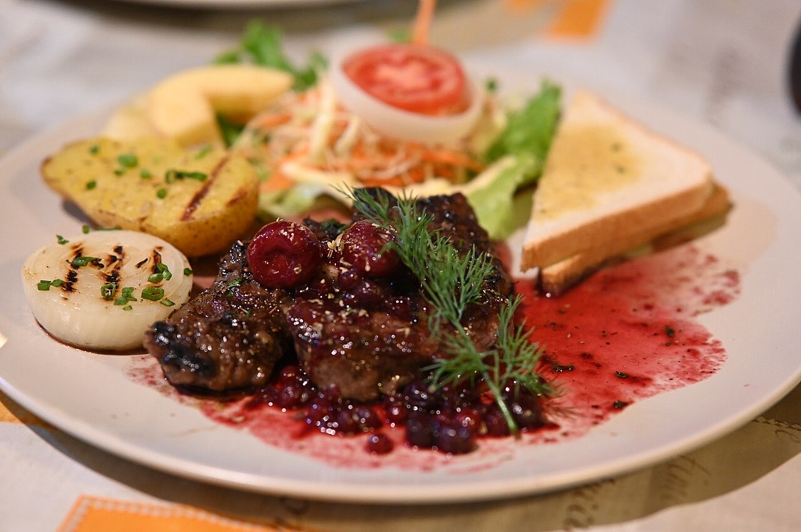
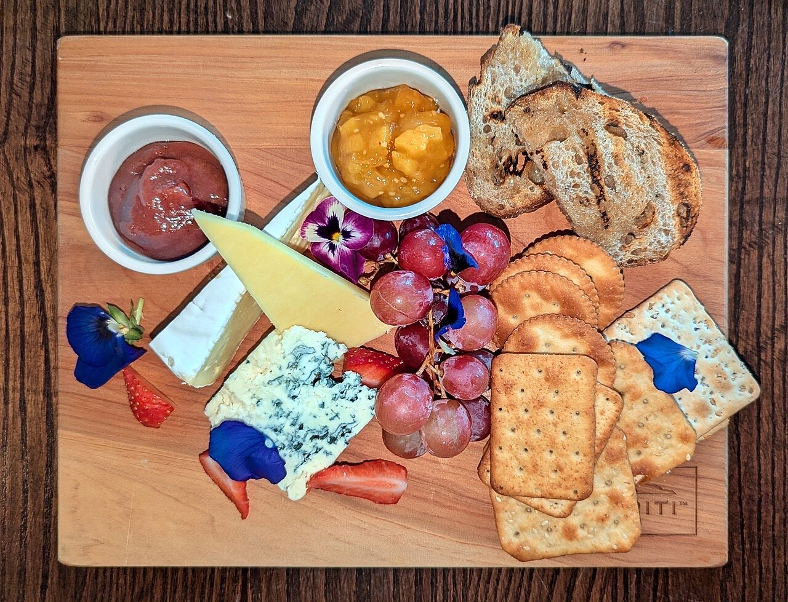

Cozinha portuguesa sazonal com toques criativos.
O menu muda com a estação e o mercado. Há menu de degustação.
5,0★ em 158 avaliações. Reserve a sua mesa.
A Raiz da Cepa Torta é um wine bistro pequeno no centro de Guimarães, na Rua Gravador Molarinho. Cozinha portuguesa sazonal, com toques criativos e menu que muda com a estação.


Fotografias ilustrativas — no site final usamos as vossas.
Pedido de reserva
Escolha o dia e a hora — o pedido chega por WhatsApp e confirmamos logo.
↑ Assim chegaria a mensagem ao vosso WhatsApp. (Nesta demonstração nada é enviado.)
Onde estamos
| Seg | 19:00–23:00 |
|---|---|
| Ter–Qua | Encerrado |
| Qui | 18:00–23:00 |
| Sex–Sáb | 12:00–15:30 · 19:00–23:00 |
| Dom | 12:00–16:00 |
Proposta para Raiz da Cepa Torta
Esta página foi feita de propósito para Raiz da Cepa Torta por João Machado, programador web aqui de Guimarães. Inclui:
Eu trato do alojamento e da manutenção. Sem compromisso.